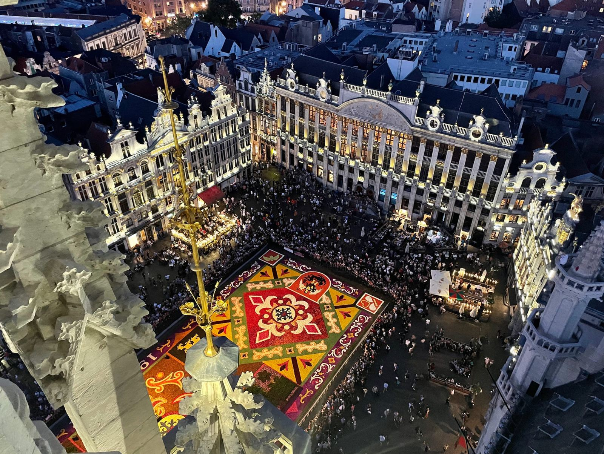

Agence réceptive locale · DMC
Vivez la Belgique, une bière à la fois.
Nous concevons des rencontres conviviales haut de gamme et des expériences d’accueil autour de la bière en plein cœur de Bruxelles, pour faire de chaque instant un moment inoubliable.

Ici, on ne fait pas visiter Bruxelles. On la partage comme accueilli chez un ami.
Fun, culturel et créatif : Beer My Guest révèle le patrimoine belge à travers la bière, le chocolat, la BD et les ruelles cachées de la capitale. Guidée par Magali, zythologue et Brusseleir passionnée depuis 2015, chaque expérience se savoure, elle ne se récite pas.

Pour les particuliers
Que ce soit entre amis, en famille, en couple ou pour un EVG/EVJF, Beer My Guest propose des jeux de piste et des découvertes de Bruxelles sous l’angle de la bière et du chocolat. Spécialistes de la bière, nous vous plongeons aussi dans l’univers gourmand du chocolat et les secrets de la capitale belge. Une expérience fun et originale à partager !
En savoir plus
Pour les entreprises et agences MICE
Des animations de soirée, teambuildings indoor & outdoor, incentives et organisation d’événements. Offrez à vos collaborateurs des expériences originales pour renforcer la cohésion et créer des souvenirs mémorables !
En savoir plusNos expériences les plus demandées
Des formats testés et adorés, à réserver en ligne ou à décliner sur-mesure pour votre groupe.
« L’équipe de Beer My Guest »
Des passionnés avec une mission claire : vous faire savourer l’expertise.
L’expertise locale, sans le côté guindé.
Immersion locale
Nous connaissons chaque brasserie et artisan par son petit nom, pour vous ouvrir des portes habituellement fermées.
Zéro compromis
Le premium ne veut pas dire ennuyeux. Nous allions l’exigence d’un service impeccable à la convivialité belge.
Esprit de famille
Chaque expérience est pensée comme si nous recevions des amis chez nous. L’accueil est au cœur de tout.
Culture & partage
La bière est un vecteur social. Nous racontons son histoire, ses secrets et son futur avec passion.
Ils ont testé Beer My Guest
★★★★★ 5/5 sur l’ensemble des expériences
« Superbe expérience avec Magalie aujourd’hui, je recommande. »
Lisa Bar
« Nous avons passé un super moment ! L’occasion de découvrir la ville… »
Mathilde Catrice
« Très belle expérience permettant de découvrir Bruxelles le temps d’un… »
Thomas Bortolaso

Notre terrain de jeu
De la capitale aux villes qui font la Belgique.
Bruxelles · Bruges · Gand · Maredsous · Waterloo · Anvers
Notre blog
Découvrez nos dernières aventures brassicoles, conseils de dégustation et actualités gourmandes au cœur de Bruxelles.

Escapade bière : Pèlerinage au pays du Houblon et Westvleteren
Dégustez la culture brassicole au Hoppenland en Belgique. Vous aimez…
Lire plus
Top 5 des bars à bières à Bruxelles
La capitale belge regorge de superbes bars à bières dont les sélections ont aisément de quoi vous faire saliver ! L’équipe de l’Échappée Bière vous a concocté son top 5 des bars à bières à ne pas manquer lors d’un séjour à Bruxelles…
Lire plus
Que faire lors d’une escale à Bruxelles ?
De passage à Bruxelles, ou désireux de découvrir la Capitale de la Belgique, cet article pourra grandement vous être utile. On vous fait une liste (non exhaustive) d’activités bruxelloises pour y découvrir les endroits emblématiques.
Lire plus
Offrez une expérience belge inoubliable.
Envoyé instantanément par e-mail, notre bon cadeau peut être personnalisé avec un message unique. Valable un an sur toutes nos explorations brassicoles et ateliers gourmands.
30 € · 60 € · 90 € · 120 €
Recevez nos escapades & nouveautés.
Une poignée d’idées d’expériences et de bonnes adresses, quelques fois par an. Jamais de spam.